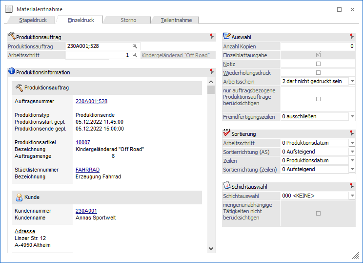
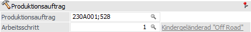
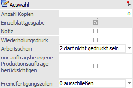
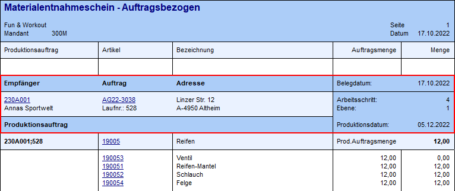
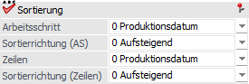
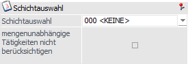
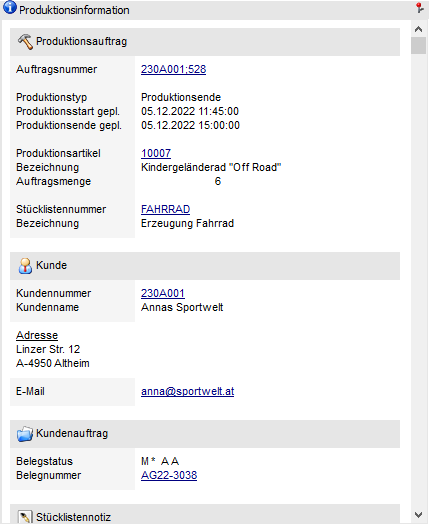
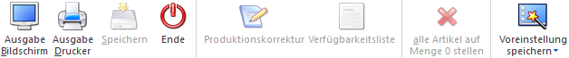

In dem Register "Einzeldruck" der Materialentnahme kann ein Materialentnahmeschein für einen bestimmten Arbeitsschritt eines Produktionsauftrags gedruckt werden.

Folgende Eingabefelder, Einstellungen und Informationen stehen zur Verfügung:
Produktionsauftrag

Ø Produktionsauftrag
An dieser Stelle kann auf einen bestimmten Produktionsauftrag eingegrenzt werden. Aufgrund dieser Hinterlegung wird im nachfolgenden Feld "Arbeitsschritt" die offenen Arbeitsschritte dieses Auftrags zur Auswahl vorgeschlagen.
Ø Arbeitsschritt
An dieser Stelle kann auf einen Arbeitsschritt des zuvor ausgewählten Produktionsauftrags eingegrenzt werden. Es wird nachfolgend der Materialentnahmeschein nur für diesen Arbeitsschritt erzeugt.
Auswahl

In diesem Bereich können diverse Einstellungen für die Druckausgabe getroffen werden. Eine Vorbesetzung kann dabei über die PPS-Parameter (Bereich "Ausgabe", Optionen von "Vorbesetzungen Materialentnahmeschein") definiert werden.
Ø Anzahl Kopien
An dieser Stelle kann hinterlegt werden, wie viel Kopien des Materialentnahmescheins (neben dem Original) gedruckt werden sollen.
Hinweis
Für die Gestaltung der Kopien stehen die Flags 1 bis 9 zur Verfügung (1 bis 9 = Kopie 1 bis 9). D.h. der Materialentnahmeschein kann inklusive des Originals in 10 verschiedenen Varianten gedruckt werden, welche vom betreuenden Händler individuell angepasst werden können.
Ø Einzelblattausgabe
Die Checkbox "Einzelblattausgabe" kann in diesem Register nicht deaktiviert werden, da beim Einzeldruck bereits ein Materialentnahmeschein pro Arbeitsschritt erzeugt wird.
Ø Notiz
Durch die Aktivierung dieser Checkbox werden die Notizen, welche bei den einzelnen Produktionsartikeln (Halbfertig- und Fertigprodukte) hinterlegt wurden (manuell oder automatisch), ebenfalls ausgegeben.
Hinweis
Die Notiz des Fertigprodukts wird bei der Anlage eines Produktionsauftrags automatisch mit dem Notiz-Text der Stückliste gefüllt. Eine nachträgliche Änderung kann z.B. im Programm Arbeitsschrittstatus vorgenommen werden.
Die Notiz der Halbfertigprodukte wird auch automatisch bei der Auftragsanlage befüllt. Hier stammt der Notiztext aus der Spalte "Text" der Komponententabelle des Stücklistenstamms. Eine Änderung des Texts kann z.B. über das Programm Produktionskorrektur erfolgen.
Ø Wiederholungsdruck
Der Materialentnahmeschein kann im Original nur einmalig gedruckt werden. Wird dieser zu einem späteren Zeitpunkt ein weiteres Mal benötigt, so muss die Checkbox "Wiederholungsdruck" aktiviert werden.
Ø nur auftragsbezogene Produktionsaufträge berücksichtigen
Durch die Aktivierung dieser Checkbox werden nur für auftragsbezogene Produktionsaufträge Materialentnahmescheine erzeugt. D.h. der Produktionsauftrag wurde über die Erfassung eines auftragsbezogenen Produktionsartikels in der Belegerfassung von WinLine FAKT erstellt (nähere Informationen siehe Kapitel Produktionsart "auftragsbezogene Produktion/Bestellung").
Hinweis
Neben der Selektion werden auf dem Materialschein Information zu dem FAKT-Beleg ausgegeben.

Ø Arbeitsschein
Mit den folgenden Optionen können Produktionsaufträge / Arbeitsschritte nach dem Druckstatus des Arbeitsscheins selektiert werden:
ü 0 - Alle
Zeilen
Materialentnahmescheine werden für Produktionsaufträge /
Arbeitsschritte unabhängig vom Druckstatus des Arbeitsscheins ausgegeben.
ü 1 - muss gedruckt
sein
Materialentnahmescheine werden nur für jene Produktionsaufträge /
Arbeitsschritte ausgegeben, für die ein Arbeitsscheins bereits gedruckt
wurde.
ü 2 - darf nicht gedruckt
sein
Materialentnahmescheine werden nur für jene Produktionsaufträge /
Arbeitsschritte ausgegeben, für welche noch kein Arbeitsscheins gedruckt
wurde.
Hinweis
Über die Option "Arbeitsschein" in den PPS-Parametern (Bereich "Ausgabe") kann die Selektion in diesem Feld vorbesetzt werden.
Ø Fremdfertigungszeilen
Mit Hilfe dieser Option wird signalisiert, dass Fremdfertigungszeilen generell im Materialentnahmeschein nicht berücksichtigt werden. Somit steht auch nur die Auswahl "0 - ausschließen" zur Verfügung.
Sortierung

Ø Sortierungsfeld (Arbeitsschritt / Zeilen)
In diesen Feldern kann eingestellt werden, nach welchem Kriterium der Arbeitsschritt (irrelevant, da nur 1 Arbeitsschritt) bzw. die Zeilen in dem Schritt sortiert werden sollen. Folgende Möglichkeiten stehen dabei zur Verfügung:
ü 0 - Produktionsdatum
ü 1 - Artikelnummer
ü 2 - Produktionsauftrag
ü 3 - Lagerplatz
ü 4 - Ausprägung 1
ü 5 - Ausprägung 2
ü 6 - Priorität
ü 7 - Positionsnummer
ü 8 - Positionstext
Ø Sortierrichtung (AS / Zeilen)
An dieser Stelle kann die Sortierrichtung für das jeweilige Sortierungsfeld eingestellt werden. Folgende Möglichkeiten stehen dabei zur Verfügung:
ü 0 - Aussteigend
ü 1 - Absteigend
Schichtauswahl

Ø Schichtauswahl
An dieser Stelle kann auf eine bestimmte Schicht eingegrenzt werden. Es werden nachfolgend nur für die Arbeitsschritte ein Materialentnahmeschein erstellt, in welchen Ressourcen bzw. Ressourcengruppen (über eine entsprechende Tätigkeit) der ausgewählten Schicht eingeplant wurden.
Achtung
Wenn ein Materialentnahmeschein für eine spezielle Schicht erzeugt werden soll, dann werden die benötigten Komponenten immer aufgerundet (außer bei dem letzten Materialschein).
Beispiel
Von dem Produktionsartikel "10007" (Kindergeländerad "Off Road") sollen 10 Stk. in 3 Schichten produziert werden, wobei pro Schicht 3 1/3 Fahrräder gefertigt werden können.
Bei den Materialentnahmescheinen der ersten und zweiten Schicht würden die Komponenten von jeweils 4 Fahrrädern ausgewiesen werden, auf dem Entnahmeschein der dritten Schicht die Materialien für 3 Fahrräder.
Voraussetzung
Als Auswertungstyp muss in den verwendeten Ressourcen bzw. Ressourcengruppen (Option "Anzeige in Auswert.") die Variante "1 - nur wenn selektiert" verwendet werden.
War zum dem Zeitpunkt der Auftragsanlage nicht der korrekte Auswertungstyp hinterlegt, dann muss der Produktionsauftrag gelöscht und neu erfasst werden.
Ø mengenunabhängige Tätigkeiten nicht berücksichtigen
Wenn unter dem Feld "Schichtauswahl" eine Auswahl getroffen wurde, kann an dieser Stelle eine Checkbox aktiviert werden. Die Aktivierung bewirkt, dass Ressourcen bzw. Ressourcengruppen (und somit auch deren Arbeitsschritte) aus mengenunabhängigen Tätigkeiten ignoriert werden.
Produktionsinformation

In diesem Informationsbereich werden die relevanten Daten zu dem gewählten Produktionsauftrag bzw. dem Arbeitsschritt angezeigt. Dazu gehören unter anderem die Ausweisung des zu produzierenden Artikels und der Fertigungsmenge.
Buttons

Folgende Buttons stehen im Register "Einzeldruck" zur Verfügung:
Ø Ausgabe Bildschirm
Durch Anwahl des Buttons "Ausgabe Bildschirm" bzw. der Taste F5 wird der Materialentnahmeschein gemäß der getätigten Selektion erstellt und am Bildschirm angezeigt.
Hinweis
Wenn mit Lagerabbuchung gearbeitet wird und zusätzlich lt. PPS-Parametern (Bereich "Parameter") eine Lagerstandsunterschreitung "1 - erlaubt mit Warnung" oder "2 - nicht erlaubt" ist, dann wird automatisch in das Register Fehlerliste gewechselt, sofern die Erzeugung des Materialscheins für den Arbeitsschritt nicht möglich war.
Achtung
Durch eine Ausgabe des Materialscheins am Bildschirm wird keine Lagerabbuchung durchgeführt und auch das Kennzeichen des getätigten Originaldrucks nicht gesetzt! Beides erfolgt nur bei der Ausgabe auf den Drucker.
Ø Ausgabe Drucker
Bei Anwahl dieses Buttons wird der Materialentnahmeschein gemäß der getätigten Selektion erstellt und auf dem Drucker ausgegeben.
Hinweis
Wenn mit Lagerabbuchung gearbeitet wird und zusätzlich lt. PPS-Parametern (Bereich "Parameter") eine Lagerstandsunterschreitung "1 - erlaubt mit Warnung" oder "2 - nicht erlaubt" ist, dann wird automatisch in das Register Fehlerliste gewechselt, sofern die Erzeugung des Materialscheins für den Arbeitsschritt nicht möglich war.
Achtung
Durch eine Ausgabe des Materialscheins auf den Drucker wird (wenn aktiviert) eine Lagerabbuchung durchgeführt und auch das Kennzeichen des getätigten Originaldrucks gesetzt!
Ø Ende
Durch Anwahl des Buttons "Ende" bzw. der Taste ESC wird das Fenster geschlossen und keine Ausgabe durchgeführt.
Ø Voreinstellung speichern
Durch Anwahl dieses Buttons erfolgt eine benutzerspezifische Speicherung aller im Fenster getätigten Einstellungen. Diese sogenannten "Voreinstellungen" können jederzeit wieder abgerufen werden und ermöglichen dadurch ein schnelleres und zielorientierteres Arbeiten (nähere Informationen entnehmen Sie bitte dem Kapitel "Die Voreinstellungen").